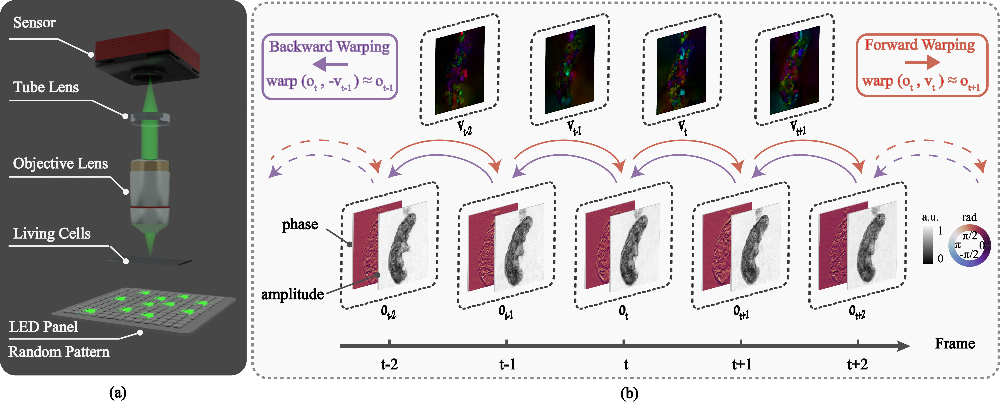

Space-time Fourier ptychography for in vivo quantitative phase imaging.
Ming Sun, Kunyi Wang, Yogeshwar Nath Mishra, Simeng Qiu, Wolfgang Heidrich
Optica, 2024.

Principle of Space-time Fourier Ptychography (ST-FP). (a) Schematic of ST-FP setup, including multiplexed LED illumination and the pathway through lenses to the sensor,
captures the dynamics of living organisms. (b) To address rapid deformations between successive frames,
a novel reconstruction approach utilizes warping to approximate intermediate frame states. For each time stamp,
raw data bt is captured under multiplexed illumination. Utilizing motion fields
-vt-1 and vt, backward and forward warping are applied to estimate
ot-1 and ot+1, respectively. This approach effectively aggregates phase
and amplitude information across time, resulting in increased reconstruction accuracy and resolution.
This method aligns each captured raw frame with its temporal stamp, allowing for the reconstruction of
objects even with significant motion, as opposed to the traditional scheme that requires negligible object movement.
Abstract
Quantitative phase imaging of living biological specimens is
challenging due to their continuous movement and complex
behavior. Here, we introduce Space-time Fourier ptychography (ST-FP),
which combines a fast Fourier ptychography (FP) model based on
compressive sensing with novel space-time motion priors for joint
reconstruction of quantitative phase, intensity, and motion fields
across consecutive frames. Using the same input data as compressed
sensing FP, ST-FP increases the space-bandwidth-time product of the
reconstructed complex image sequences while leveraging redundant
temporal information to achieve robust reconstruction performance.
The efficacy of this approach is demonstrated across various
applications, particularly in observing living microorganisms
undergoing rapid morphological changes and reconstructing amplitude
and phase targets in motion. The improved phase retrieval capability
of ST-FP enables digital refocusing, facilitating comprehensive
three-dimensional analysis of microorganisms. This advancement paves
the way for enhanced visualization of cellular processes,
developmental biology studies, and investigations into life mechanics
at the microscopic level.
Paper
Paper [Ming_STFP_2024.pdf (3.7MB)]
Supplementary [Ming_STFP_2024_supp.pdf (13.4MB)]
More details [ST-FP]